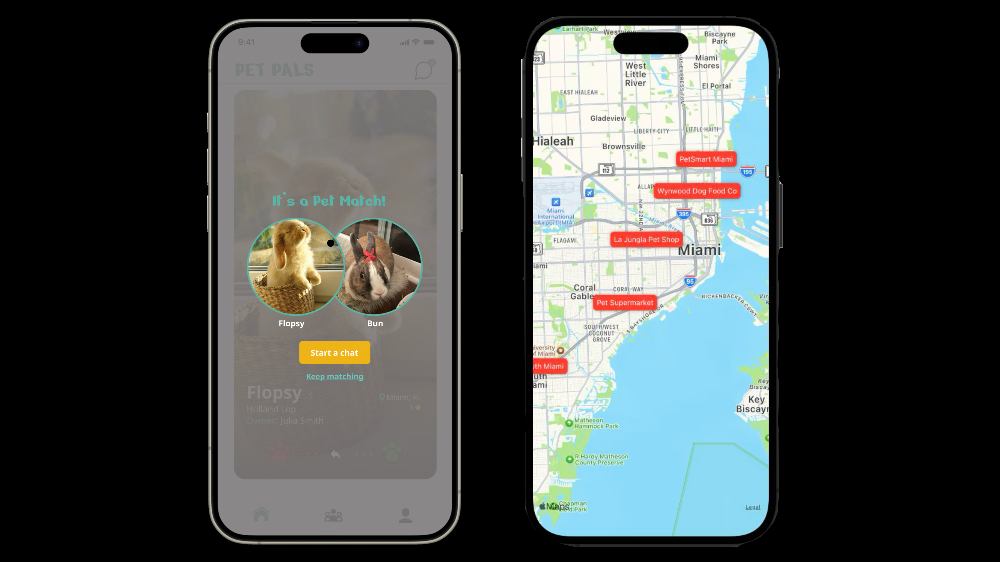
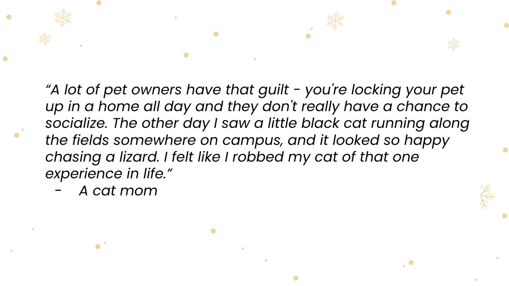
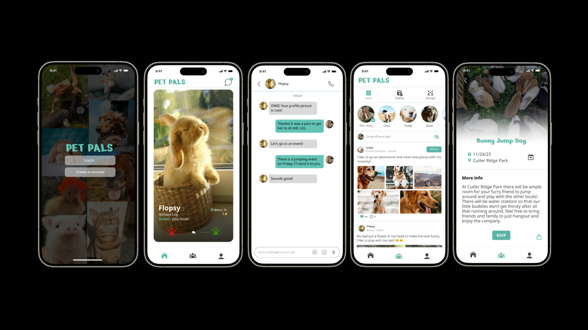
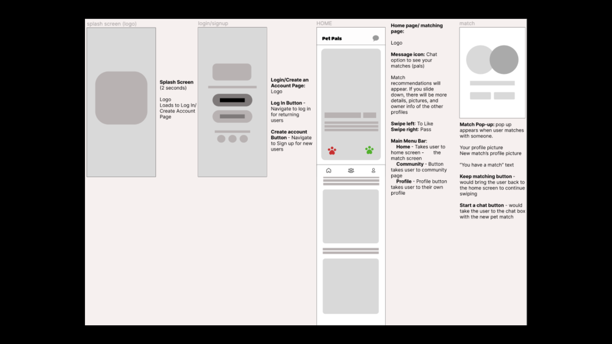
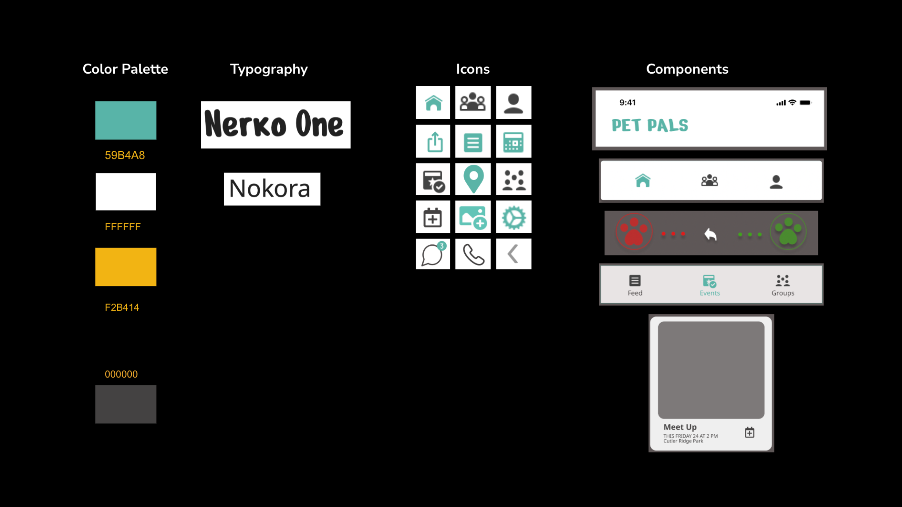
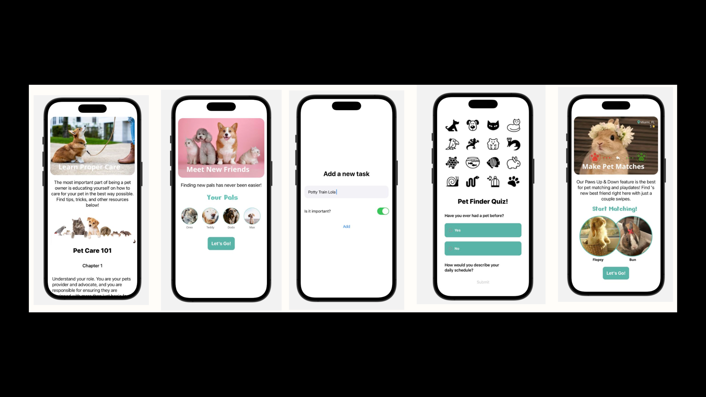
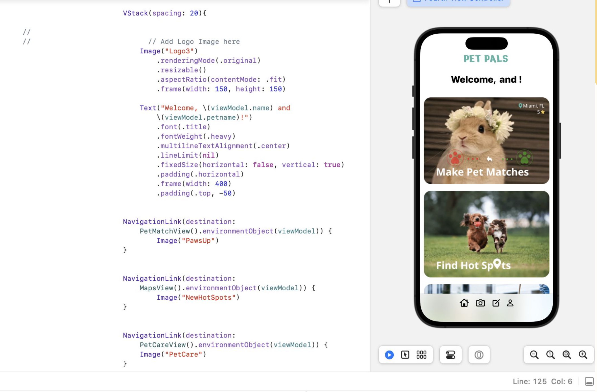

PetPals: A Social App for Pets and Their People
Connecting pets, one swipe at a time.
Role
User Researcher
duration
Tools
Project Overview
PetPals is a mobile app that helps pet owners connect their pets with new friends. Inspired by dating apps, it provides a way to set up playdates, discover local events, and access reliable information on pet care. I built this app in Xcode using SwiftUI while applying UX design principles from start to finish.

Why PetPals?
Many pet owners want to socialize their pets but don't have access to the right tools or communities. Others want reliable care information in one place. Existing solutions are scattered across forums, Facebook groups, and limited apps. PetPals brings everything together in one platform.
“A lot of pet owners have that guilt. You're locking your pet up in a home all day and they don't really have a chance to socialize. I sometimes feel like I am robbing my cat of its freedom.”
What I Aimed
to Solve
- Help pets socialize in safe, supervised ways
- Give pet owners reliable, curated information
- Create a sense of local community
- Keep the app accessible, easy to use, and safe for all kinds
of pets

Research Highlights
I conducted interviews and surveys with pet owners across different ages, lifestyles, and types of pets. Most users had never used a pet app before and wanted something trustworthy, informative, and fun to use.
“I wish my rabbit could have bunny friends. Playdates would help entertain her in a way I can’t with toys.”“It would be great to find people who have the same dog breed so I can learn from their experiences.”
User Personas




UX design process
I focused on creating an app that felt intuitive, trustworthy, and enjoyable to use. Key pillars included:
- Safety: pet owner ratings, transparency, and ID verification
- Personalization: filters, personality-based matching, and local results
- Memorability: clear icons, minimal learning curve, and swipe-based gestures
I started with paper sketches, then moved into wireframes and task flows to map out the user experience. These visuals helped define layout, navigation, and feature priorities based on the user personas.
What i built
We built the app in SwiftUI using Xcode 15.2. I worked alongside Michelle and Stef, dividing development across major views:
Welcome message and quick access to core features
Connect pet owners through a swipe-based interface
Helpful links and tips
Lets users track goals and routines
Show nearby pet-friendly spots using MapKit
Upload pet photos and write bios

How I Built It
I used SwiftUI in Xcode and designed the app around modular view controllers. This allowed for better organization and made it easier to add or refine features later. I used ImagePicker, MapKit, and persistent storage for key components. While some features are placeholders for now, they have been structured for easy expansion.

learnings from Testing
- Most users completed the main flow in under 90 seconds
- They found the design intuitive and liked the color scheme
- Users loved the community events feature and wanted more
- I received suggestions to add swipe gestures and better anchoring in the event tabs
Future Ideas
- Add backend support for profiles and conversations
- Let users host and RSVP to events
- Integrate smart collars for pet tracking
- Store vaccination records and care history
- Improve filters for animal types and nearby pals
What I Took Away
This project helped me grow both as a designer and developer. I enjoyed working with real feedback, building a functioning SwiftUI app, and advocating for a more inclusive digital space for pet owners. My focus was on creating something joyful, functional, and grounded in research.